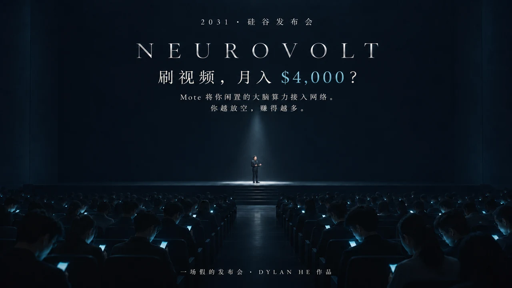

Dylan He
Films
中文
/
EN
所有作品
A FILM BY DYLAN HE
NEUROVOLT
2026.11.06
/ 3分31秒 / 科幻讽刺短片

播放影片 · YouTube
Open on YouTube
Close player
关于影片
我用 AI 拍了一场【假的科技发布会】。
产品、公司都是虚构的，但里面某些东西，好像已经发生了。
从哪句开始，你觉得这不是科幻了？
如果是你，会领走这个免费的设备吗？
NEXT FILM
PIN